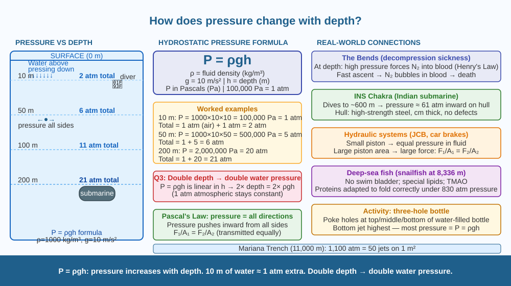

Discover why pressure increases with depth, calculate how much pressure acts on a diver at different depths, and understand the life-threatening conditions this creates for deep-sea exploration.
A deep-sea fish collected from 1,000 metres below the ocean surface often dies or literally explodes when brought to the surface. A scuba diver who surfaces too quickly risks "the bends" — a condition that can paralyse or kill. A submarine must be built from steel several centimetres thick to survive the deep ocean. Why does going deeper in water create such extreme forces? And why does pressure increase with depth rather than being the same throughout the water?
What is pressure?
Pressure is force per unit area: P = F/A (units: Pascal, Pa = N/m²)
Why pressure increases with depth:
At any depth in a fluid, the pressure at that point is caused by the weight of all the fluid above that point pressing down. A column of water 1 metre tall and 1 m² base has: - Volume = 1 m³ - Mass = 1,000 kg (density of water = 1,000 kg/m³) - Weight = 1,000 × 10 = 10,000 N - Pressure at base = 10,000/1 = 10,000 Pa = 0.1 atm
The hydrostatic pressure formula:
P = ρgh
Where: - P = pressure (Pa) - ρ (rho) = density of the fluid (kg/m³) - g = gravitational acceleration (10 m/s²) - h = depth below the surface (m)
Every additional 10 metres of water depth adds approximately 1 atmosphere of pressure (≈ 100,000 Pa). This is because the weight of water (1000 kg/m³ × 10 m × 10 m/s²) = 100,000 Pa = 1 atm.
Total pressure at depth h (including atmospheric pressure at the surface):
P_total = P_atmosphere + ρgh = 101,325 Pa + (1000 × 10 × h)
Double the depth → approximately double the pressure (from the water column alone). This directly explains Q3.
Examples: - At 10 m depth: P_water = 100,000 Pa = 1 atm → total = 2 atm - At 50 m depth: P_water = 500,000 Pa = 5 atm → total = 6 atm - At 200 m (typical submarine operating depth): ~21 atm - At 11,000 m (Mariana Trench): ~1,100 atm
Why pressure acts equally in all directions:
Unlike a solid, a fluid cannot transmit forces only in the direction they are applied. Pressure at a point in a fluid acts equally in all directions (Pascal's Law). This means a submarine hull at depth is under the same crushing force inward from all sides.
The bends (decompression sickness):
At depth, higher pressure forces more nitrogen gas to dissolve in the blood (Henry's Law: dissolved gas ∝ pressure). If a diver surfaces too quickly, pressure drops rapidly → nitrogen comes out of solution as bubbles in the blood and tissues → blockages in joints, nervous system, lungs → extreme pain, paralysis, death. The cure: a recompression chamber.
Think of depth in water like adding layers of books on top of you. Each layer of water (like a book) adds its weight to all the layers below. At 1 metre, only one layer presses on you. At 10 metres, 10 layers press on you. At 1,000 metres, 1,000 layers press on you from all sides. The total weight of all those layers pressing down (and inward from the sides) is the pressure you feel. Double the depth → double the layers → double the pressure from the water alone.

The diagram shows a vertical cross-section of ocean from surface (0 m) to 200 m. A column of water is shown with depth markers at 0, 10, 50, 100, 200 m. At each depth, a pressure gauge shows the corresponding value (1 atm, 2 atm, 6 atm, 11 atm, 21 atm). A diver is shown at 10 m, a shark at 50 m, a submarine at 200 m. Arrows point inward on each object, showing pressure from all directions. The formula P = ρgh is shown. An inset shows a diver's body at depth with bubbles forming in blood (the bends).
Take a plastic bottle, fill it with water, and poke three small holes at different heights — top, middle, and bottom. Hold the bottle over a sink. The water at the bottom hole shoots out furthest (highest pressure from most water above it). The water at the top shoots out least far (least water above). You have just demonstrated that pressure increases with depth and can be converted to kinetic energy (the water jet). The depth of each hole = h in the formula P = ρgh.
In a mercury barometer, the weight of a 760 mm column of mercury (density 13,600 kg/m³) equals atmospheric pressure (≈ 101,325 Pa). Verify: P = ρgh = 13,600 × 10 × 0.76 = 103,360 Pa ≈ 101,325 Pa (close enough). Now imagine a water barometer: at what height would water need to be raised to balance atmospheric pressure? (Calculate using ρ_water = 1,000, g = 10, P = 101,325 Pa.) This is why mercury (not water) is used in barometers — a water barometer would be 10+ metres tall.
What happens to water pressure as you go deeper underwater?
Why is understanding the pressure-depth mechanism useful?
If a submarine descended to twice the depth, what would you predict about external pressure?
(a) Calculate the water pressure at 3,800 m — the depth of the Titanic wreck. (Water density = 1,000 kg/m³, g = 10 m/s².) (b) A submarine hull is a cylinder of diameter 10 m. Calculate the inward force on one square metre of the hull at this depth. (c) If the hull steel has a yield strength of 250 MPa (250 × 10⁶ Pa), and the steel is 30 mm thick, calculate the stress in the steel. Is 3,800 m within the safe range? (Hint: hoop stress in a thin-walled cylinder = P × r / t, where r = radius, t = thickness.)
The pressure at the bottom of the Mariana Trench (11,000 m) is about 1,100 atmospheres — equivalent to about 50 jumbo jets stacked on top of a 1 m² tile. Yet life thrives there. Snailfish (Pseudoliparis swirei) have been recorded at depths of 8,336 m — they have flexible, gelatinous bodies (no rigid structures to crush), cell membranes rich in unsaturated fatty acids that remain fluid under pressure, and a chemical called trimethylamine oxide (TMAO) that prevents proteins from unfolding at high pressure. The deep sea is not an uninhabitable extreme — it is an ecosystem that has been colonised by life that has solved every problem we would find fatal.
P = ρgh: pressure in a fluid increases with depth because of the weight of fluid above. Every 10 m adds ~1 atm. Double depth → approximately double water pressure. Pascal's Law: pressure acts equally in all directions in a fluid.